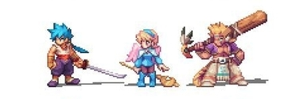

La historia inicia en un mundo muy alejado. Dos continentes separados durante miles de años por un mar de lodo, establecen contacto por primera vez. Tras poco tiempo, estalla una guerra entre ambos continentes. Tras años de lucha, los dos bandos agotan sus fuerzas y sus recursos, forzándose así la firma de un tratado de paz.
Un año después de esa firma, la princesa Elina, de la Alianza de Naciones oriental, desaparece en el Imperio Fou occidental mientras visitaba a las víctimas de la guerra. La Alianza tiene miedo de mandar una gran tropa a buscarla, pues podría romperse la paz. Así pues, es imposible mandar una expedición militar a buscarla.
Pasa el tiempo y la princesa no aparece. La hermana de Elina, Nina, se decide finalmente a emprender un viaje para encontrar a su hermana. Partirá en compañía de Cray, el líder de la tribu de los Worens, y amigo de ambas desde la infancia.
El tema central de esta historia es que Ryu se encuentra con Nina mientras se encuentra en un gran agujero en el desierto en el continente oriental. Ryu tiene un Ojo de Dragón, que le otorga increíbles habilidades para transformarse en dragón y convocar dragones.
Ryu viaja con Nina y en varios momentos la protege, la primera vez que lo hace es después de conocer a Rasso por primera vez, Ryu es descubierto como un dragón por un juglar después de que la presa se inunda en el jugador.
Ella es la princesa de Wyndia y un miembro del clan Wing. Debido a que estaba mayormente protegida viviendo como una princesa, Nina puede parecer un poco ingenua. En cualquier caso, ella es amable y posee una gran determinación para lograr sus objetivos al encontrar a su hermana desaparecida Elina y ayudar a Ryu. Algunos de sus pensamientos personales se utilizan para narrar la historia. Nina admira a su hermosa hermana y busca desesperadamente llevarla a casa.
Un miembro muy fuerte de la tribu Woren con aspecto de gato que maneja un gran poste de madera y siente algo por la hermana de Nina, Elina.
Cray es el jefe de la tribu de los peores. Cumpliendo con su título, Cray es un Woren extremadamente poderoso. Debido a su fuerza, él, en teoría, sirve de guardaespaldas a su amiga de la infancia, Nina. Durante el transcurso del juego, Cray y Nina están buscando en el Continente Oriental por Elina, la hermana de Nina. A lo largo de su búsqueda, el grupo de Cray y Nina crece, lo que aumenta la probabilidad de encontrar a Elina.
Ershin es el nombre de la misteriosa armadura que se une con Ryu y su grupo en Breath of Fire IV. La armadura contiene el espíritu atrapado de los Deis sin fin. Deis es luego liberado de la armadura por Ryu cuando él entra en su mente y rompe las ataduras que la sostienen allí. Sin embargo, por necesidad, más tarde regresa a la armadura para ayudar a Ryu.
Se le asignó vigilar a Ryu y a el grupo mientras Cray fue puesto a juicio. Un mercenario larguirucho y un espadachín del clan Grassrunner, un perro que vive por dinero. Es un hombre de pocas palabras, y cuando habla, tartamudea constantemente. También se rumorea que es un hombre que ama sus bebidas. La mayoría de las espadas que equipa le permiten atacar dos veces, debido a su técnica de extracción rápida. Scias también es conocido por usar un estilo de lucha llamado "Bushi Dog".
Es un Endless, invocado indebidamente al mundo por el Imperio Fou, y es la otra mitad de Ryu. Debido a esto, ambos comparten habilidades y fortalezas similares. Al final se convierte en el principal antagonista del juego.
Cuando fue convocado al mundo, el ritual de invocación estaba incompleto, por lo que el alma de Fou-Lu se dividió en dos. La otra parte llegó al mundo seiscientos años más tarde que su alter ego. Una vez que Fou-Lu fundó el Imperio Fou, cayó en un profundo sueño, esperando a Ryu.